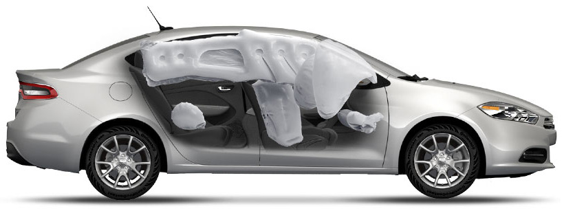

safety
CLASS-LEADING SAFETY & SECURITY+.
-
PARKSENSE® REAR PARK ASSIST SYSTEMThe available ParkSense+ Rear Park Assist System+ uses ultrasonic sensors to detect nearby objects behind the vehicle when in reverse, to help you maneuver in tight spaces at parking speeds. And a graphic display in the instrument cluster lets you know how close the object is.
-
FOUR-WHEEL ANTILOCK DISC BRAKES. Dodge Dart Limited comes standard with four-wheel antilock disc brakes for powerful braking performance. This system features Brake Assist that senses emergency braking and boosts the power as needed, and Hill Start Assist that eliminates rolling backwards when starting out on tricky inclines.
-
AVAILABLE BLIND SPOT MONITORING+/ REAR CROSS PATH DETECTION+ Available Blind Spot Monitoring and Rear Cross Path Detection constantly monitors blind spots and alerts you of any encroaching vehicle.
-
REACTIVE FRONT HEAD RESTRAINTS+These head restraints move during a rear-end collision to decrease the space between the headrest and head, helping reduce the risk of head and spinal injuries.
-

AIRBAGS THROUGHOUT THE CABIN Advanced multistage driver and front passenger airbags+. Supplemental side-curtain and front seat-mounted airbags, rear-seat pelvic side airbags, and knee-blockers. All standard.
-
ELECTRONIC STABILITY CONTROL+ (ESC) This robust system steps in when it detects that you're veering off your intended path, engaging the antilock brake system, Brake Assist, throttle management, and All-Speed Traction Control to help you maintain directional control.
-

SMART BEAM HEADLAMPS The available SmartBeam® Intelligent Headlamp System detects ambient light from oncoming traffic. It switches automatically from high to low beam and back again when oncoming headlamps are sensed, providing the maximum amount of light for nighttime driving.
-
CRUMPLE ZONES Crumple zones, which are 68% high strength steel, dissipate energy to help minimize injury in the event of an accident.